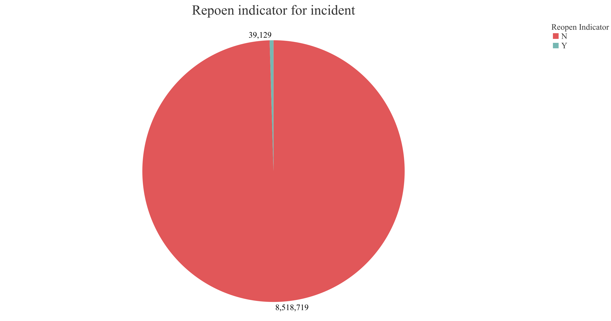

New York City
EMS Incident Dispatch Data
Incidents and Response Time

Average response time (min):

Dispatch Data
New York Boroughs
New York City is divided into five divisions. The five divisions are: Manhattan, Brooklyn, Queens, The Bronx, and Staten Island.
Response Time
The average response time is the time between when an incident was created in the dispatch system and when the first unit arrived on location.
Pie Bar
Static Image 1

Static Image 2

Static Image 3

Static Image 4
Static Image 5

Static Image 7
Static Image 8
Static Image 9

Static Image 10

Write-up
For our interactive design we chose to analyze the EMS Incident Dispatch Data for New York City, provided by the Fire Department of New York City. As a group, we decided to use a map as our interactive graphic. We had considered a few other options, like a sunburst or bubble chart, but based on the dataset that we have we felt that a map was the best way to convey our data. The tooltip is the guide to the map and shows the boroughs. The dropdown lists the range of dates chronologically. We wanted our design to follow a familiar pattern of reading, and so we placed the first aspect we wish the reader to see on the left. As they continue to scan the page and look to the middle, the data can be filtered through an interatction on the map to display the results. We wanted to be able to select multiple boroughs at once to fully display the range of the data. It was important for us to highlight what had been selected in order to show the exact area being examined. Red felt like the right color as emergency responders correspond to red and white. We chose a minimalist approach in order to keep our visualization from becoming too overwhelming.
The first step in the development process was displaying a simple static map. We began by having the state of New York drawn before narrowing the map down to the specific areas we wanted to examine. Then we chose to add specific features such as dropdowns for the desired range of months and to display the data. After that it was just a matter of adding any features we thought would improve our visualization. We broke up the work initially into three categories: creating an interactive map, dividing the data into modular files, and the front end. At first we were able to work seperately yet in tandem to complete these tasks. Collaboration was vital in the later stages of development to bring all of the pieces together. We had to connect the sorted data to filter based on selections, then use that result to clearly display information to the viewer. The final pieces were completed in person in order to finalize our vision and ensure we agreed on the result.
Approximately twenty hours were spent developing the application. The aspects that took the most time were breaking up the csv file and updating the legend. Since the data file is large, we had to divide the csv into multiple files in order to access the data. Using the csv with our data was a relatively new process for the group. It was a steep learning curve figuring out how the parts worked together to create a dynamic visualization.